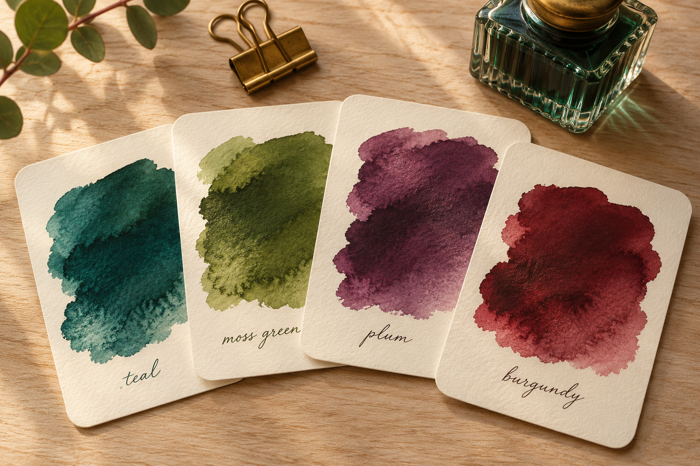

The person behind the pages
Hello, I'm Issie.

A stationery enthusiast, a curious maker, and very much a work in progress.
This is my little space to share the pens, inks and creative experiments that bring me joy.
I'm learning as I go - trying new materials, following small ideas, and enjoying the process.
Why "in progress"?
Because I value exploration - the trying, the tinkering, and the in-between stages just as much as the finished results. I often have a few unfinished experiments on the go, and that's part of the fun. This space is a place to share those ongoing ideas, discoveries and little learnings along the way.
What you'll find here

Pens & inks
Thoughts, swatches and impressions from the pens and inks I'm using and enjoying.

Creative experiments
Small projects, material tests and playful ideas as I try out different ways to be creative.

Behind the process
A look at the steps, sketches and work-in-progress moments that happen along the way.
Come along for the making.
Explore the journal or follow my latest experiments on Instagram.
Visit the journal Instagram